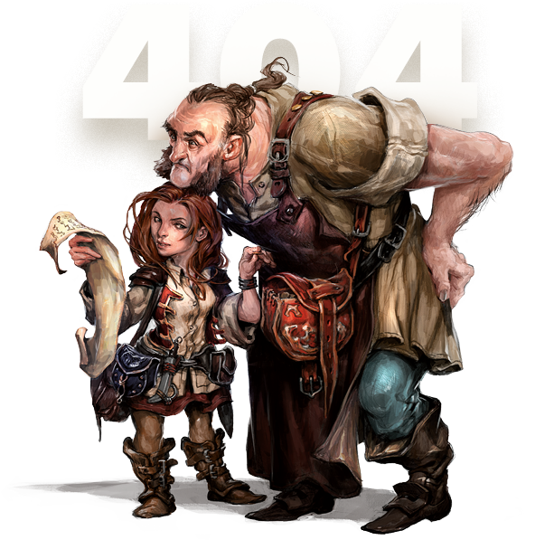

<mat-card appearance="outlined">
  <div class="container">
    <mat-card-content>
      
      <h1 class="mat-headline-4 smallmargin">Whoops, that's an error.</h1>
      <a mat-raised-button color="primary" (click)="back()">Go Back</a>
    </mat-card-content>
  </div>
</mat-card>
